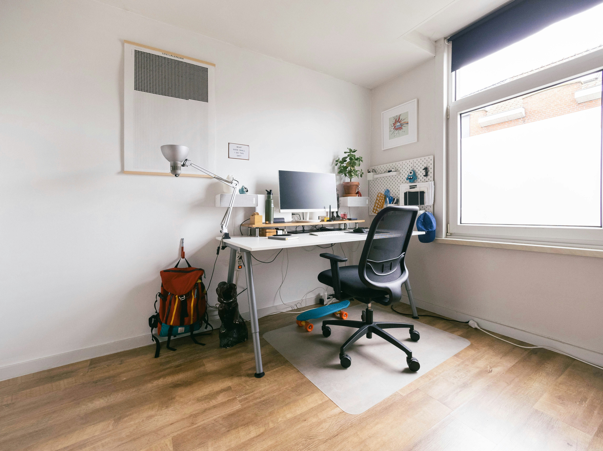

Floor & damp
We check floor levels, insulation and damp protection.

Garage conversions · Stourbridge area
Turn unused storage into a warm study, playroom, utility or extra room.
A proper room
We check the floor, walls, roof, damp protection, ventilation and access before finishes go on. The new space should feel like part of the house.

What we check
A site visit shows whether the garage is suitable and what work it needs.
We check floor levels, insulation and damp protection.
Heating and ventilation keep the room comfortable.
Windows and doors need to connect the new room properly.

Local conversion work
Garage conversions across Stourbridge, Wordsley, Kingswinford and Brierley Hill.
FAQs
The shell, floor, services and finish affect the price. We inspect before quoting.
Most straightforward conversions take several weeks.
Often not, but planning conditions and external changes must be checked.
Yes, in most cases. Insulation, ventilation and fire safety are included.
Not with the right insulation, damp protection, heating and ventilation.
Could your garage work harder?